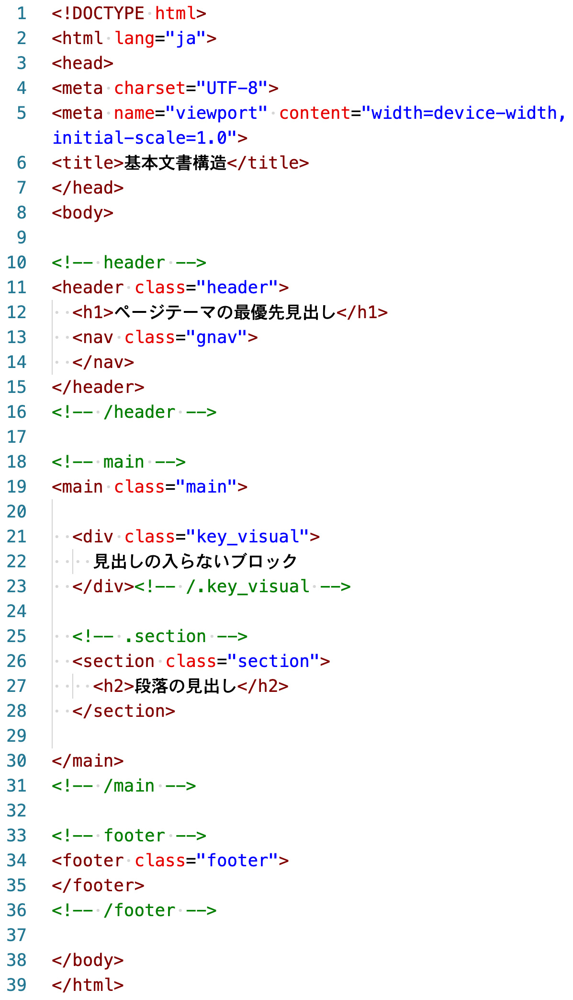

HTMLコーディングルール
- 自分のコーディングルールを作成してみましょう（外枠のみ）
- 以下はレイアウト用の「div class="container"」を入れてない場合です

1. body内を「header」「main」「footer」要素に分割
2. 「header」要素内には、必ず「h1」要素を配置
3. 「nav」要素は、「header」要素内に配置
※例外あり
4. 「main」要素内は、「section」要素に分割
※直下に見出し要素が必須
5. 「main」要素内で見出し要素が配置できない場合は、「div」要素で分割
6. コメントを適切に設定
7. クラス名は、シンプルな命名規則にする
8. div要素の終了タグには、必ずコメントの閉じも記述する
9 section要素の開始タグの前に、必ずコメントも記述する
10. ブログ形式のレイアウトのみ、「aside」「article」要素を記述
11. HTML Validatorで、必ず文法チェックを行う
12. HTML5 Outlinerで、文書構造チェックを行う
記述例
<!DOCTYPE html> <html lang="ja"> <head> <meta charset="UTF-8"> <meta name="viewport" content="width=device-width, initial-scale=1.0"> <title>Document</title> <link rel="stylesheet" href="css/style.css"> </head> <body> <!-- header --> <header class="header"> <h1>ページテーマの最優先見出し</h1> <nav> <ul> <li><a href="#">リンク1</a></li> <li><a href="#">リンク2</a></li> <li><a href="#">リンク3</a></li> </ul> </nav> </header> <!-- /header --> <!-- main --> <main class="main"> <!-- 見出しのないブロック：div要素 --> <div class="key-visual"> <img src="" alt=""> </div> <!-- h2から始まる場合：section要素 --> <section class="content"> <h2>章の最優先見出し</h2> <p>段落</p> <ul> <li>箇条書き</li> <li>箇条書き</li> <li>箇条書き</li> </ul> </section> <!-- h2から始まる場合：section要素 --> <section class="content"> <h2>章の最優先見出し</h2> <p>段落</p> <ul> <li>箇条書き</li> <li>箇条書き</li> <li>箇条書き</li> </ul> </section> <!-- h2から始まる場合：section要素 --> <section class="content"> <h2>章の最優先見出し</h2> <p>段落</p> <ul> <li>箇条書き</li> <li>箇条書き</li> <li>箇条書き</li> </ul> </section> </main> <!-- /main --> <!-- footer --> <footer class="footer"> <p><small>© 2025 Webデザイン</small></p> </footer> <!-- /footer --> </body> </html>